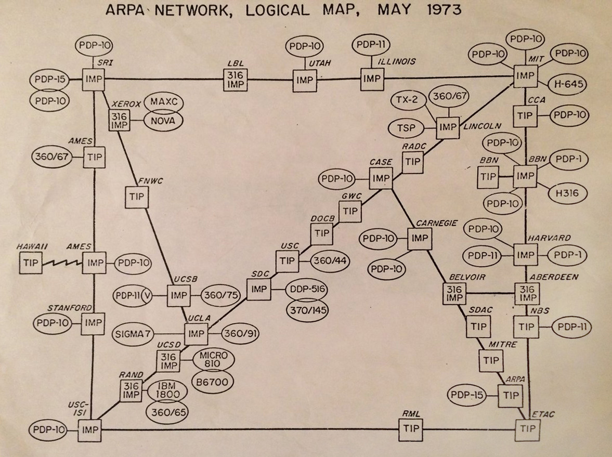
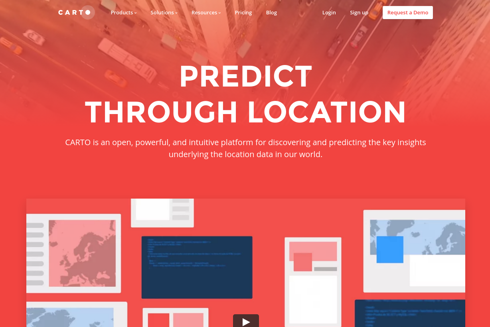
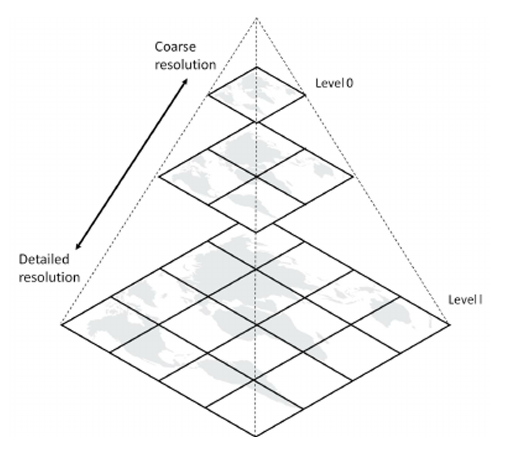

Class 11 - Lecture
Introduction to Web Mapping Technology & the Geoweb
The Geoweb
- Top of the hierarchy
- Encompasses multiple disciplines, technologies, sectors
- Relatively nebulous term that can mean different things to different users and developers
The Geoweb
Historical Precedent - Arpanet

The Geoweb
Historical Precedent - Arpanet
The Geoweb
Historical Precedent - William Gibson
The Geoweb
Historical Precedent
“The matrix has its roots in primitive arcade games. … Cyberspace. A consensual hallucination experienced daily by billions of legitimate operators, in every nation, by children being taught mathematical concepts. … A graphic representation of data abstracted from banks of every computer in the human system. Unthinkable complexity. Lines of light ranged in the nonspace of the mind, clusters and constellations of data. Like city lights, receding.”
The Geoweb
Historical Precedent - Department of Defense
The Geoweb
Historical Precedent
Advent of WWW + HTML positioned relative to ARPANET past to present

WebGIS
Web GIS originates from a combination of web technology and the Geographical Information System[s], which is a recognized technology that is mainly composed of data handling tools for storage, recovery, management and analysis of spatial data.

WebGIS - Historical Precedent
Xerox PARC Map Viewer (1993):

WebGIS - Historical Precedent
Mapquest launched 1996 as first commercial web mapping service:

WebGIS - Historical Precedent
- Click Map
- Wait for map to respond
- Entire page including map reloads
- Mapped is then panned in one direction or another
Web GIS - Part I - Web Technology
1999 - Advent of AJAX:
Web GIS - Part I - Web Technology
1999 - Advent of AJAX:
Web GIS - Part I - Web Technology
Web GIS - Part I - Web Technology
Core Architecture:
- Client (a web browser, a desktop application, or a mobile application)
- GIS Server (identified by a URL)
- Communication (Hypertext Transfer Protocol - HTTP/HTTPS)
Web GIS - Milestones
2003: NASA World Wind Released. An open virtual globe that loads data from distributed resources across the internet.

Web GIS - Milestones
2004: OpenStreetMap, an open source, open content world map founded by Steve Coast.

Web GIS - Milestones
2005: Google Maps - The first version. Based on raster tiles organized in a quad tree scheme, data loading done with AJAX.

Web GIS - Milestones
2005: Google Earth, first released building on the virtual globe metaphor. The KML (XML based) markup language allows users to integrate their own personal content.
Web GIS - Milestones
2010: MapBox is founded - large provider of custom online maps. Active in MBTiles specification, the TileMill cartography IDE, the Leaflet JavaScript library, and the CartoCSS map styling language and parser.
Web GIS - Milestones
2011: CARTO (formerly CartoDB) is a Software as a Service (SaaS) cloud computing platform that provides GIS and web mapping tools for display in a web browser.

Web GIS - Milestones
2011: Leaflet, the initial release, an open-source JavaScript library for interactive maps.

Web GIS - Milestones
2012: ArcGIS Online (AGOL) is a browser-based /cloud-based mapping, analysis, collaborative web GIS platform that allows you to use, create, share maps, scenes, apps, layers, analytics, and data.
Web Mapping
“The advent of web mapping can be regarded as a major new trend in cartography. Until recently cartography was restricted to a few companies, institutes and mapping agencies, requiring relatively expensive and complex hardware and software as well as skilled cartographers and geomatics engineers.”
Web Mapping
“A web map or an online map is both served and consumed, thus web mapping is more than just web cartography, it is a service by which consumers may choose what the map will show.”
Web Mapping - Anatomy of a Web Map
Web Mapping - Anatomy of a Web Map
Web Mapping - Anatomy of a Web Map
Web Mapping - Anatomy of a Web Map
Web Mapping - Anatomy of a Web Map
Web Mapping - Base Maps
A basemap is a reference map on which users can overlay multiple layers of spatial or geographic data upon, such as vector or raster data.
Web Mapping - Base Maps

Web Mapping - Base Maps

Web Mapping - Base Maps

Web Mapping - Map Projections
Web Mapping - Map Projections
{kind=link}
{kind=link}


{kind=link}


{kind=link}